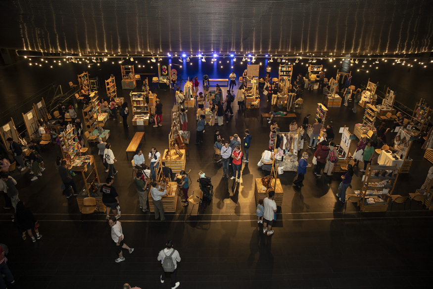
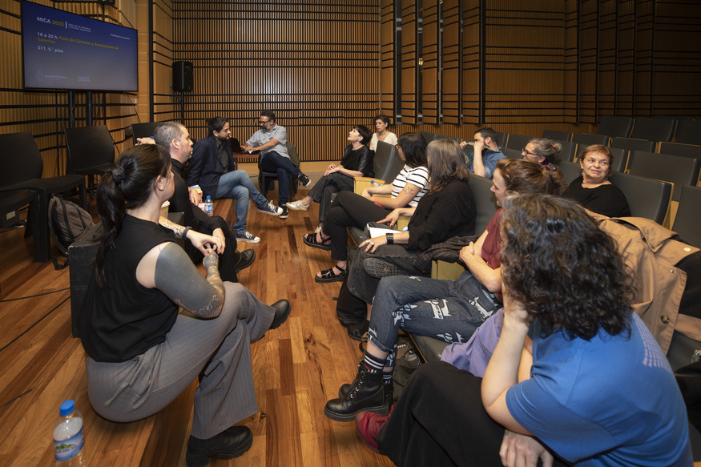
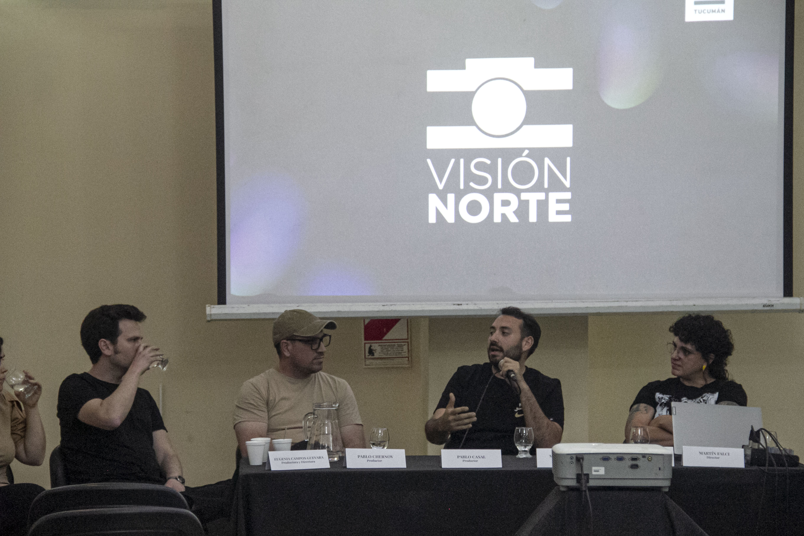
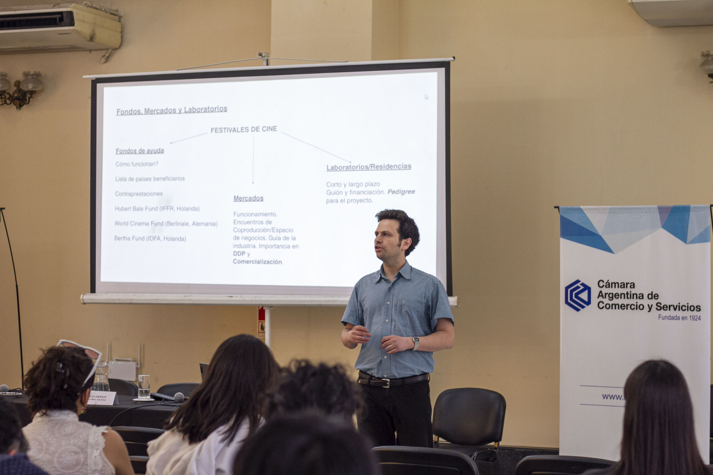

Participante 1 9 roles
¿Qué rol te toca?
Tirá el dado para descubrir desde qué lugar vas a negociar.
Clase
Saga Barros
Quién da la clase
Gestión cultural
Artes visuales
Videojuegos
Audiovisual
Docencia
Bloque 1
¿De qué puede vivir una persona formada en arte mientras construye su obra?
Una posición para debatir
Una formación amplia permite moverse entre proyectos, lenguajes y equipos.
La profundidad en un oficio sigue siendo valiosa. La pregunta es cómo combinarla con capacidad de adaptación.
Una forma de trabajar
Entender fundamentos de varias áreas para conectar saberes, equipos y proyectos.
Profundizar en un oficio para resolver problemas concretos con mayor detalle.
La amplitud permite moverse entre campos y reconocer cuándo hace falta profundidad.
La IA amplifica esta capacidad: para pedir bien y evaluar resultados, primero hay que comprender el área.
Trayectorias
Entre la formación y la meta aparecen encargos, equipos, pruebas y aprendizajes.
Una artista puede diseñar piezas para otros proyectos antes de sostenerse con su obra. Un cineasta puede editar para redes o trabajar como cámara antes de dirigir una película.
Formación artística
Composición, color, investigación visual, narrativa, montaje, materiales y lectura crítica.
Se aplican en obra propia, diseño gráfico, dirección de arte, videojuegos, audiovisual y docencia.
La caja de herramientas en acción
Gráfica, puesta en escena y comunicación en vivo.
Concepto visual, ambientación y decisiones estéticas.
Montaje, ritmo y construcción de sentido.
Identidad, producción y experiencia del público.
Ecosistema global
Creación y circulación cultural con trabajo, organización y actividad económica.


Arte, tecnología y mercado
«Yo no estoy en contra de la tecnología pero distingo entre el arte industrial y la industria del arte, entre la tecnología que se usa para hacer cosas buenas (como Devo) y la que se usa para abaratar costos, reemplazar el factor humano o generar inventos como Arjona».
Indio Solari, conversación con Marcelo Figueras
Sostener una práctica
Una obra necesita producción, circulación y condiciones para que el trabajo continúe.
Presupuestos, derechos, públicos, alianzas y formas de ingreso también forman parte de las decisiones artísticas.
«Hay que aprender a negociar, firmar contratos y entender los propios derechos porque no te hace menos artista, sino un artista que puede seguir trabajando».
Moria Casán
Un concepto global
El conocimiento, la tecnología y la capacidad de aprender intervienen en la creación de valor.
Una intersección posible
El cruce describe proyectos y tareas. No implica acceso automático a beneficios legales.
Bloque 2
Traducir entre sectores para que los proyectos avancen.
Una comparación para pensar la práctica
Ambas tienen lenguaje, lógica, técnica y teoría.
En muchos sentidos se parecen: requieren leer un contexto, articular intereses y construir acuerdos. También tienen diferencias y reglas propias.
Cada campo tiene sus códigos
Todos articulan personas, recursos, ideas y decisiones. En artes visuales y cine también se producen, piensan y aprecian obras.
Obra, exhibición, galerías e instituciones.
Obra, equipos, producción y distribución.
Representación, acuerdos y legitimidad pública.
Clientes, costos, plazos y sostenibilidad.
La gestión cultural traduce entre criterios de valor, tiempos e intereses que no siempre coinciden.
El oficio de gestionar
Entender lo suficiente de cada lenguaje para conectar a quienes lo hablan.
Vuelve el generalismo: reconocer qué importa, hacer buenas preguntas y saber cuándo recurrir a alguien con mayor profundidad.
Distintos perfiles, distintas necesidades
Cada participante llega con sus intereses, necesidades y formas de trabajar.
¿Qué necesita cada parte para participar?
Qué gestionamos
Un proyecto avanza cuando quienes participan pueden trabajar juntos.
Para que un proyecto avance
Vínculos sostenibles
Entender qué necesita cada parte y contemplarlo en los acuerdos.
Acordar qué aporta cada quien, qué recibe y qué puede comprometer. Hacer explícitos los límites y revisar lo que cambia.
La ejecución necesita liderazgo
Conducir no es mandar, es persuadir.
Delegar es confiar tareas y decisiones a otras personas, con contexto, recursos y un margen real de autonomía.
Aceptar otra forma de hacer
Los demás van a ejecutar distinto a vos. El resultado acordado es la referencia para evaluar.
Idea · vínculos · ejecución
Hace falta solidez en las tres dimensiones.
Un concepto que valga la pena.
Acuerdos que se puedan sostener.
Capacidad de llevarlo a la práctica.
Si una queda muy floja, el proyecto entero se resiente. Ninguna necesita ser perfecta.
Ejemplo · videojuego
Un videojuego educativo desarrollado en conjunto por Tucumán Videojuegos Cooperativa y la Legislatura de Tucumán.
Ejemplo · mercado audiovisual
Un espacio para conectar proyectos, equipos, instituciones y oportunidades en el audiovisual del NOA.

Visión Norte · cuatro objetivos
Dar lugar a la comercialización de producciones locales.
Que jóvenes productores vivan rondas de negocios y pitching.
Instalar la industria audiovisual en la sociedad tucumana.
Fortalecer a las figuras políticas que acompañan el evento.

Cierre
Inglés para ampliar los vínculos y el acceso a conocimiento.
IA para explorar herramientas y trabajar con criterio.
Ejercicio final · de a dos
Cada une representa un rol. Negocien cómo llevar adelante el proyecto atendiendo los intereses de ambas partes.
¿Qué rol te toca?
Tirá el dado para descubrir desde qué lugar vas a negociar.
¿Qué rol te toca?
Tirá el dado para descubrir desde qué lugar vas a negociar.
¿Qué van a resolver?
Tiren el dado y definan un contexto concreto para el proyecto.
Pueden tirar cada dado por separado. Los roles de la pareja siempre son distintos; las pistas son un punto de partida para construir el personaje.
¿Qué necesitás conseguir? ¿Qué podés aportar? ¿Qué podés ceder y qué es indispensable?
Escuchen a la otra parte y acuerden una acción, los recursos necesarios y quién se ocupa de cada cosa.
Expliquen qué gana cada une, qué concesiones hicieron y qué tensión quedó pendiente.